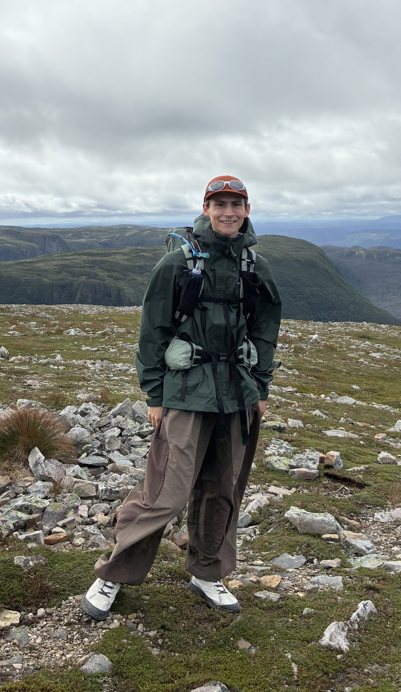

Sam Ruttgaizer
Mechatronics engineering student building embedded systems for satellites, medical devices, and researching quantitative MRI. Expected graduation 2028.
About
I'm a Mechatronics Engineering student at Memorial University of Newfoundland (Class of 2028, Co-op), I enjoy working on physical hardware whether it be sensor conditioning circuits, embedded firmware, or control loops, and I'm especially drawn to projects in both the biomedical and space industries: rehabilitation devices, biomedical instrumentation, satellite firmware, projects like these that have real world impact are the ones I enjoy working on most.
My co-op terms have taken me from a CubeSat's radio stack at C-CORE (MUNSTAR-1), to a chemical-sensing safety system on Michelin's factory floor, to a quantitative MRI pipeline for spinal cord imaging at Polytechnique Montréal's NeuroPoly Lab. Outside of work terms, I lead the software team for Memorial Medtech, Memorial University's biomedical engineering student team, which recently won 1st place at the 2026 True North Biomedical Competition for our smart rehabilitzation knee sleeve.
Outside of engineering, I am an avid long distance runner, I love to hike, play chess, and I volunteer as a sledge hockey coach.

Skills
- ProgrammingC, C++, Python, MATLAB, Julia, PlantUML, HTML
- EmbeddedESP-IDF, I2C, UART, RS-485, BLE, FreeRTOS, Real-time signal processing, EMG, IMU, & PPG sensors
- ToolsSolidWorks, KiCad, AutoCAD, Git, LaTeX, SPICE, MS Office, Oscilloscope, Logic analyzer, Spectrum analyzer
- MRI / ScientificSEPIA, SCT, ANTs, FSL, ITK-SNAP, ROMEO, STI Suite, qMRLab
- ProfessionalLeadership, Team communication, Problem solving, Research